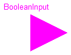
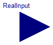
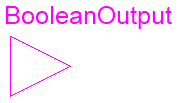
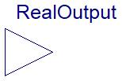
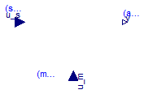
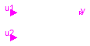

Modelica.Blocks.Interfaces.BooleanInput
Modelica.Blocks.Interfaces.BooleanInput
Modelica.Blocks.Interfaces.BooleanInput
Modelica.Blocks.Interfaces.BooleanInput
'input Boolean' as connector

Connector with one input signal of type Boolean.
Extends from Boolean.
 Modelica.Blocks.Interfaces.RealInput
Modelica.Blocks.Interfaces.RealInput
'input Real' as connector

Connector with one input signal of type Real.
Extends from Real.
 Modelica.Blocks.Interfaces.BooleanOutput
Modelica.Blocks.Interfaces.BooleanOutput
'output Boolean' as connector

Connector with one output signal of type Boolean.
Extends from Boolean.
 Modelica.Blocks.Interfaces.RealOutput
Modelica.Blocks.Interfaces.RealOutput
'output Real' as connector

Connector with one output signal of type Real.
Extends from Real.
 Modelica.Blocks.Interfaces.SI2SO
Modelica.Blocks.Interfaces.SI2SO
2 Single Input / 1 Single Output continuous control block

Block has two continuous Real input signals u1 and u2 and one continuous Real output signal y.
Extends from Modelica.Blocks.Icons.Block (Basic graphical layout of input/output block).
| Type | Name | Description |
|---|---|---|
| input RealInput | u1 | Connector of Real input signal 1 |
| input RealInput | u2 | Connector of Real input signal 2 |
| output RealOutput | y | Connector of Real output signal |
 Modelica.Blocks.Interfaces.SignalSource
Modelica.Blocks.Interfaces.SignalSource
Base class for continuous signal source

Basic block for Real sources of package Blocks.Sources. This component has one continuous Real output signal y and two parameters (offset, startTime) to shift the generated signal.
Extends from SO (Single Output continuous control block).
| Type | Name | Default | Description |
|---|---|---|---|
| Real | offset | 0 | Offset of output signal y |
| Time | startTime | 0 | Output y = offset for time < startTime [s] |
| Type | Name | Description |
|---|---|---|
| output RealOutput | y | Connector of Real output signal |
Modelica.Blocks.Interfaces.SO
Single Output continuous control block
Block has one continuous Real output signal.
Extends from Modelica.Blocks.Icons.Block (Basic graphical layout of input/output block).
| Type | Name | Description |
|---|---|---|
| output RealOutput | y | Connector of Real output signal |
 Modelica.Blocks.Interfaces.partialBooleanSource
Modelica.Blocks.Interfaces.partialBooleanSource
Partial source block (has 1 output Boolean signal and an appropriate default icon)

Basic block for Boolean sources of package Blocks.Sources. This component has one continuous Boolean output signal y and a 3D icon (e.g., used in Blocks.Logical library).
Extends from Modelica.Blocks.Icons.PartialBooleanBlock (Basic graphical layout of logical block).
| Type | Name | Description |
|---|---|---|
| output BooleanOutput | y | Connector of Boolean output signal |
 Modelica.Blocks.Interfaces.SISO
Modelica.Blocks.Interfaces.SISO
Single Input Single Output continuous control block

Block has one continuous Real input and one continuous Real output signal.
Extends from Modelica.Blocks.Icons.Block (Basic graphical layout of input/output block).
| Type | Name | Description |
|---|---|---|
| input RealInput | u | Connector of Real input signal |
| output RealOutput | y | Connector of Real output signal |
 Modelica.Blocks.Interfaces.SVcontrol
Modelica.Blocks.Interfaces.SVcontrol
Single-Variable continuous controller

Block has two continuous Real input signals and one continuous Real output signal. The block is designed to be used as base class for a corresponding controller.
Extends from Modelica.Blocks.Icons.Block (Basic graphical layout of input/output block).
| Type | Name | Description |
|---|---|---|
| input RealInput | u_s | Connector of setpoint input signal |
| input RealInput | u_m | Connector of measurement input signal |
| output RealOutput | y | Connector of actuator output signal |
 Modelica.Blocks.Interfaces.partialBooleanSISO
Modelica.Blocks.Interfaces.partialBooleanSISO
Partial block with 1 input and 1 output Boolean signal

Block has one continuous Boolean input and one continuous Boolean output signal with a 3D icon (e.g., used in Blocks.Logical library).
Extends from Modelica.Blocks.Icons.PartialBooleanBlock (Basic graphical layout of logical block).
| Type | Name | Description |
|---|---|---|
| input BooleanInput | u | Connector of Boolean input signal |
| output BooleanOutput | y | Connector of Boolean output signal |
 Modelica.Blocks.Interfaces.partialBooleanComparison
Modelica.Blocks.Interfaces.partialBooleanComparison
Partial block with 2 Real input and 1 Boolean output signal (the result of a comparison of the two Real inputs)

Block has two continuous Real input and one continuous Boolean output signal as a result of the comparison of the two input signals. The block has a 3D icon (e.g., used in Blocks.Logical library).
| Type | Name | Description |
|---|---|---|
| input RealInput | u1 | Connector of first Boolean input signal |
| input RealInput | u2 | Connector of second Boolean input signal |
| output BooleanOutput | y | Connector of Boolean output signal |
 Modelica.Blocks.Interfaces.partialBooleanSI2SO
Modelica.Blocks.Interfaces.partialBooleanSI2SO
Partial block with 2 input and 1 output Boolean signal

Block has two continuous Boolean input and one continuous Boolean output signal with a 3D icon (e.g., used in Blocks.Logical library).
Extends from Modelica.Blocks.Icons.PartialBooleanBlock (Basic graphical layout of logical block).
| Type | Name | Description |
|---|---|---|
| input BooleanInput | u1 | Connector of first Boolean input signal |
| input BooleanInput | u2 | Connector of second Boolean input signal |
| output BooleanOutput | y | Connector of Boolean output signal |